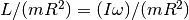
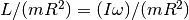

Multiple file access functions¶
The following group of functions should be the preferred method to access to the library. They allow to access to multiple ephemeris files at the same time, even by multiple threads.
When an error occurs, these functions execute error handlers according to the behavior defined by the function calcephpy.seterrorhandler().
Thread notes¶
If the standard I/O functions such as fread are not reentrant then the CALCEPH I/O functions using them will not be reentrant either.
It's not safe for two threads to call the functions with the same object of type CalcephBin. But it's safe for two threads to access simultaneously to the same ephemeris file with two different objects of type CalcephBin. In this case, each thread must open the same file.
Usage¶
The following examples, that can be found in the directory examples of the library sources, show the typical usage of this group of functions.
The example in Python language is pymultiple.py.
Functions¶
calcephpy.CalcephBin.rotangmom_unit¶
-
calcephpy.CalcephBin.rotangmom_unit(JD0, time, target, unit) → PV¶ Parameters: - JD0 (float) -- Integer part of the Julian date
- time (float) -- Fraction part of the Julian date
- target (int) -- The body whose orientations are requested. The numbering system depends on the parameter unit.
- unit (int) -- The units of PV.This integer is a sum of some unit constants (CALCEPH_UNIT_???) and/or the constant
USE_NAIFID.If the unit containsUSE_NAIFID, the NAIF identification numbering system is used for the target (NAIF identification numbers for the list).If the unit does not containUSE_NAIFID, the old number system is used for the target (see the list in the functioncalcephpy.CalcephBin.compute()).
Returns: An array to receive the angular momentum due to its rotation, divided by the product of the mass and of the square of the radius, and the derivatives, of the body.The angular momentum and its derivatives are expressed in days if unit containsUNIT_DAY.The angular momentum and its derivatives are expressed in seconds if unit containsUNIT_SEC.Return type: list
This function reads, if needed, in the ephemeris file self and interpolates the angular momentum vector due to the rotation of the body, divided by the product of the mass  and of the square of the radius
and of the square of the radius  , of a single body (target) for the time JD0+time and stores the results to PV. The ephemeris file self must have been previously opened with the function
, of a single body (target) for the time JD0+time and stores the results to PV. The ephemeris file self must have been previously opened with the function calcephpy.CalcephBin.open(). The angular momentum  , due to the rotation of the body, is defined as the product of the inertia matrix
, due to the rotation of the body, is defined as the product of the inertia matrix  by the angular velocity vector
by the angular velocity vector  . So the returned value is 
The output values are expressed in the units specified by unit.
. So the returned value is 
The output values are expressed in the units specified by unit.
This function checks the units if invalid combinations of units are given to the function.
The following example prints the angular momentum, due to its rotation, for the Earth at time=2451624.5
from calcephpy import *
jd0=2442457
dt=0.5E0
peph = CalcephBin.open("example2_rotangmom.dat")
G = peph.rotangmom_unit(jd0, dt, NaifId.EARTH,
Constants.USE_NAIFID+Constants.UNIT_SEC)
print(G)
peph.close()
calcephpy.CalcephBin.rotangmom_order¶
-
calcephpy.CalcephBin.rotangmom_order(JD0, time, target, unit, order) → PVAJ¶ Parameters: - JD0 (float) -- Integer part of the Julian date
- time (float) -- Fraction part of the Julian date
- target (int) -- The body whose orientations are requested. The numbering system depends on the parameter unit.
- unit (int) -- The units of PV.This integer is a sum of some unit constants (CALCEPH_UNIT_???) and/or the constant
USE_NAIFID.If the unit containsUSE_NAIFID, the NAIF identification numbering system is used for the target (NAIF identification numbers for the list).If the unit does not containUSE_NAIFID, the old number system is used for the target (see the list in the functioncalcephpy.CalcephBin.compute()). - order (int) --
The order of derivatives.
- = 0 , only the angular momentum is computed. The first three numbers of PVAJ are valid for the results.
- = 1 , only the angular momentum and the first derivative are computed. The first six numbers of PVAJ are valid for the results.
- = 2 , only the angular momentum and the first and second derivatives are computed. The first nine numbers of PVAJ are valid for the results.
- = 3 , the angular momentum and the first, second and third derivatives are computed. The first twelve numbers of PVAJ are valid for the results.
If order equals to 1, the behavior of
calcephpy.CalcephBin.rotangmom_order()is the same ascalcephpy.CalcephBin.rotangmom_unit().
Returns: An array to receive the angular momentum due to its rotation, divided by the product of the mass and of the square of the radius, and their different order of the derivatives, of the body.This array must be large enough to store the results.- PVAJ[1:3] contain the angular momentum and is always valid.- PVAJ[4:6] contain the first derivative and is only valid if order is greater or equal to 1.- PVAJ[7:9] contain the second derivative and is only valid if order is greater or equal to 2.- PVAJ[10:12] contain the third derivative and is only valid if order is equal to 3.The angular momentum and its derivatives are expressed in days if unit containsUNIT_DAY.The angular momentum and its derivatives are expressed in seconds if unit containsUNIT_SEC.Return type: list
This function is similar to the function calcephpy.CalcephBin.orient_unit(), except that the order of the computed derivatives is specified.
This function reads, if needed, in the ephemeris file self and interpolates the angular momentum vector due to the rotation of the body, divided by the product of the mass and of the square of the radius , of a single body (target) for the time JD0+time and stores the results to PVAJ. The angular momentum , due to the rotation of the body, is defined as the product of the inertia matrix by the angular velocity vector . So the returned value is
The order of the derivatives are specified by order. The ephemeris file self must have been previously opened with the function calcephpy.CalcephBin.open().
The output values are expressed in the units specified by unit.
This function checks the units if invalid combinations of units are given to the function.
The following example prints only the angular momentum, due to its rotation, of the Earth at time=2451624.5
from calcephpy import *
jd0=2442457
dt=0.5E0
peph = CalcephBin.open("example2_rotangmom.dat")
G = peph.rotangmom_order(jd0, dt, NaifId.EARTH,
Constants.USE_NAIFID+Constants.UNIT_SEC, 0)
print(G)
peph.close()